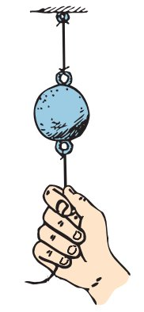
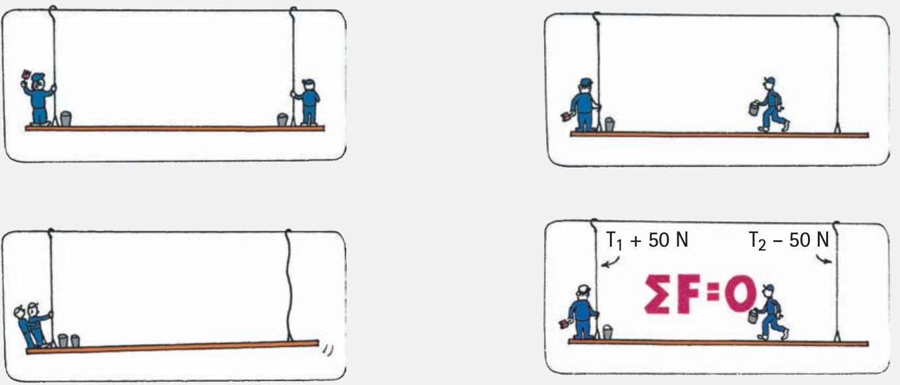
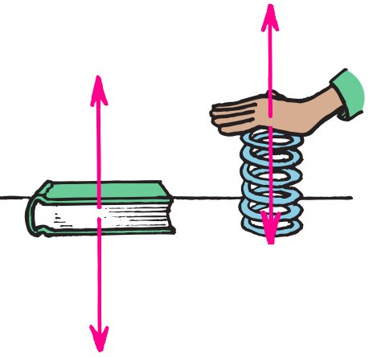
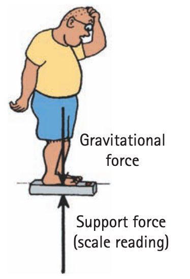

Forces and Newton’s First Law
Section 1.2
Forces change motion; they are not required to keep motion going.
Teacher Copy
Learning Target
Students will explain Newton’s First Law and use the idea of inertia to predict whether an object’s motion will stay the same or change.
- I can state Newton’s First Law in everyday language.
- I can explain that inertia is a property of matter, not a force.
- I can distinguish between “no forces acting” and “no net force acting.” and identify support force, weight, and other common forces in simple situations.
Vocabulary / Key Notation Preview
force · inertia · Newton’s First Law · net force · support force · weight
Sort the vocabulary. Write each vocabulary word in the column that best matches what you know right now. You may move a word later.
| Know for sure | Recognize | Don't know yet |
|---|---|---|
What's to Come
Circle anything familiar, underline symbols, labels, conditions, data, or features that seem important, and write short notes about what you think may matter later.
The diagram shows a box moving to the right at constant speed while a push acts to the right and friction acts to the left. Use the same situation for all parts.
(a) Identify the two horizontal forces shown.
(b) What must the horizontal net force be if the box is moving at constant speed in a straight line?
(c) If the push is 35 N to the right, use your answer from part (b) to determine the friction force.
(d) A student says, “Because the box moves at constant speed, no forces are acting.” Use the diagram and your earlier answers to correct the statement.

Let's Get Started
Skim before close reading. Look at the headings and figures. Find 1–2 things you notice and 1–2 things you wonder about.
| What I noticed | |
|---|---|
| What I wonder |
Annotate the words and visuals together. Underline evidence, circle or highlight bold vocabulary, label arrows, measurements, or important features, connect sentences to figures, and jot short questions or connections in the margins.
I can state Newton’s First Law in everyday language.
Newton’s First Law changes the question
Earlier ideas about motion often assumed that continued motion needed a continued forward force. Newton’s First Law says something different: an object continues at rest or continues with constant velocity unless a nonzero net external force acts. The key word is continues. A net force is needed to change velocity, not to “use up” motion.
Constant velocity means both speed and direction remain unchanged. An object can therefore move for a long time with zero net force. A sudden interaction can change one part of a system while another object tends to continue what it was already doing.

\(\Sigma \vec F=0 \Rightarrow \text{velocity is unchanged}\)
Physical meaning: Zero net force can describe an object at rest or an object moving with constant velocity.
Example 1: Newton’s First Law
A spacecraft coasts far from large external forces. Its velocity remains unchanged unless a net external force acts. Name the principle.
You Try It 1: Newton’s First Law
A book remains at rest on a desk because the forces on it balance. Which law connects zero net force with unchanged motion?
I can explain that inertia is a property of matter, not a force.
Inertia is a property of matter
Inertia is the tendency of an object to resist a change in velocity. It is a property of matter, not an interaction and not a force arrow. More mass means more inertia, but inertia itself does not push a moving object forward or hold a resting object in place.
Tablecloth, coin, hammer, and string demonstrations all reveal the same idea from different angles. When one part of a situation changes quickly, another object tends to keep its previous state of motion. The force belongs to the interaction that causes the change; inertia describes the object’s resistance to that change.



Example 2: Inertia Is Not a Force
A student labels an arrow “inertia force” on a moving cart. Explain why that arrow should be removed and what inertia actually describes.
You Try It 2: Inertia Is Not a Force
Give a short everyday example of inertia, then explain why inertia is a property of the object rather than an interaction force.
I can distinguish between “no forces acting” and “no net force acting.” and identify support force, weight, and other common forces in simple situations.
Zero net force does not mean zero forces
Several forces may act at the same time and still add to zero. A moving box can have a push to the right and friction to the left. A supported object can have weight downward and a support force upward. When opposing effects balance, the net force is zero even though the individual interactions remain real.
A support force comes from contact. A table pushes upward on a book; a bathroom scale pushes upward on a person. If the supported object is in vertical equilibrium, the upward support force and the downward weight balance. The scale reading is an individual force—not the net force.



- In the phrase “net force,” what does net mean?
- Choose one source figure above and name the forces that act on the chosen object.
- Why is “no net force” different from “no forces acting”?
Example 3: Balanced Horizontal Forces
The diagram shows a box moving at constant speed. Identify the two horizontal forces and state the horizontal net force.
You Try It 3: Balanced Horizontal Forces
From the opposing-force diagram, compare the leftward and rightward forces required for zero net force and state the balance condition.

Example 4: Zero Net Force
Use the opposing-force diagram. Identify the two force directions and explain what must be true of their magnitudes for the net force to be zero.
You Try It 4: Zero Net Force
Use the book-on-table force diagram to identify the net-force condition. Which statement best describes the forces on the book?

- Weight acts down and support force acts up; they can balance.
- Only weight acts because the book is not moving.
- Only support force acts because the table holds the book.
- Inertia acts upward to cancel gravity.
Vocabulary with Definitions / Reference
| Term | Physics meaning |
|---|---|
| force | A push or pull—an interaction that can affect an object’s motion. |
| inertia | The tendency of matter to resist a change in velocity; a property, not a force. |
| Newton’s First Law | An object keeps its state of rest or constant straight-line velocity unless a nonzero net force acts. |
| net force | The vector sum of all forces acting on the chosen object. |
| support force | The contact force a surface exerts perpendicular to itself; also called the normal force. |
| weight | The gravitational force acting on an object. |
Summary
- Newton’s First Law connects zero net force with unchanged velocity.
- Inertia is a property of matter, not a force.
- Several forces can act and still balance to zero net force; support force and weight are common examples.
What I Figured Out
1. State Newton’s First Law in your own words.
2. Explain why inertia is not a force.
3. Describe a situation with several forces but zero net force.
Common Mistakes
- Calling inertia a force.
- Assuming an object must have a net forward force simply because it is moving.
- Confusing “no forces acting” with “the forces add to zero.”